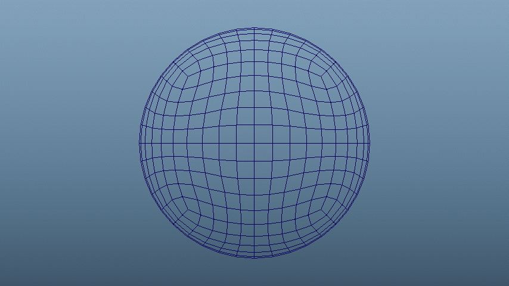
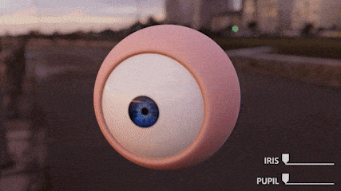
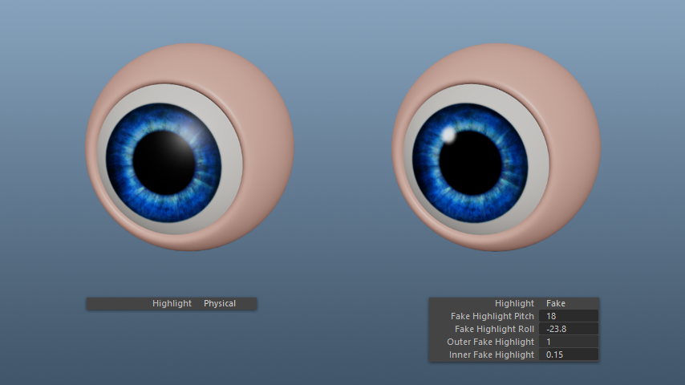

Rigging an Eye
24 January 2026
When the original Galaxy Fold landed years ago, it was a clunky, fragile promise of things to come. It took Samsung six years to refine that vision into the Galaxy Z Fold 7, a device that finally felt thin, light, and “normal.”
Now, here at CES 2026, I’ve just gone hands-on with the new Samsung Galaxy Z TriFold. It promises to be the next great leap forward: a phone that unfolds not just once, but twice, turning into a legitimate 10-inch tablet.
I must admit, using it feels like holding the future. However, after spending some time with it, I can’t shake the feeling that we’ve taken a massive step backward to get here.
First, let’s talk about the name. The “TriFold” moniker is a bit of a misnomer. The device doesn’t fold three times; it folds twice, using two hinges to connect three distinct screen panels.
Unlike the HUAWEI Mate XT, which launched back in 2024 with a screen that wraps around the outside, Samsung has stuck to its guns with a different design philosophy. The TriFold features a standard outer cover display protected by glass and a separate, massive inner display that folds inward. I prefer Samsung’s approach here. It keeps the fragile foldable panel safe when the device is in your pocket, which is essential for something that costs as much as a used car.
First Attempt: Quaternions
To prevent users from destroying that expensive screen, Samsung added a smart software feature. If you try to fold the phone in the wrong direction, the screen flashes a visual warning, and the haptics vibrate with increasing intensity. It’s a smart, easily understandable way to prevent catastrophe.
If you look at the spec sheet, the Galaxy Z TriFold is remarkably similar to the Galaxy Z Fold 7 that also launched in 2025. Internally, it runs on the same Qualcomm Snapdragon 8 Elite chipset — not the newest Gen 5 variant, but it still is plenty powerful. The camera array is identical as well, featuring the same 200MP primary lens, ultrawide, and telephoto setup found on the Fold 7.
Where they truly diverge is the battery. The TriFold packs a 5,400mAh battery, which is roughly 23% larger than the cell in the Fold 7. That battery increase sounds great on paper, but we must remember that this battery needs to power a significantly larger display. My gut tells me that any gains in capacity will be negated by the sheer amount of pixels this thing has to push, but we won’t know for sure until we get a review unit we can actually put through testing.
The TriFold runs One UI 8 based on Android 16. Although Samsung hasn’t added or changed much for the TriFold when compared to other foldables it’s made in the past, it did add two genuinely useful features to take advantage of the extra screen real estate.
First up is true three-app multitasking. On the Z Fold 7, running three apps at once results in cramped, narrow windows. On the TriFold, you can split the screen into thirds, and each app maintains a standard smartphone aspect ratio. For productivity, this is a game-changer. You can have Slack, Chrome, and YouTube open simultaneously, and they all look and behave exactly as they would on a slab phone. Multitaskers rejoice!
"On the TriFold, you can split the screen into thirds, and each app maintains a standard smartphone aspect ratio. For productivity, this is a game-changer."
Another highlight is the ability to run Samsung DeX locally on the device. You don’t need an external monitor; the inner screen is large enough to support a full desktop environment with a taskbar and windowed apps. Technically, this is not exclusive to the TriFold, as Samsung’s newer tablets also have this feature. But having it on a phone is definitely new, and is a true game-changer for folks who want the “pocket PC” we were promised decades ago by sci-fi media.
DeX is still a niche feature, but for the people who use it, this is an incredible update for usability. Who knows, maybe this will make DeX less niche in the future.

Animating a simple NURBS circle
Second Attempt: Sine and Cosine
To prevent users from destroying that expensive screen, Samsung added a smart software feature. If you try to fold the phone in the wrong direction, the screen flashes a visual warning, and the haptics vibrate with increasing intensity. It’s a smart, easily understandable way to prevent catastrophe.
If you look at the spec sheet, the Galaxy Z TriFold is remarkably similar to the Galaxy Z Fold 7 that also launched in 2025. Internally, it runs on the same Qualcomm Snapdragon 8 Elite chipset — not the newest Gen 5 variant, but it still is plenty powerful. The camera array is identical as well, featuring the same 200MP primary lens, ultrawide, and telephoto setup found on the Fold 7.
Where they truly diverge is the battery. The TriFold packs a 5,400mAh battery, which is roughly 23% larger than the cell in the Fold 7. That battery increase sounds great on paper, but we must remember that this battery needs to power a significantly larger display. My gut tells me that any gains in capacity will be negated by the sheer amount of pixels this thing has to push, but we won’t know for sure until we get a review unit we can actually put through testing.
The TriFold runs One UI 8 based on Android 16. Although Samsung hasn’t added or changed much for the TriFold when compared to other foldables it’s made in the past, it did add two genuinely useful features to take advantage of the extra screen real estate.
First up is true three-app multitasking. On the Z Fold 7, running three apps at once results in cramped, narrow windows. On the TriFold, you can split the screen into thirds, and each app maintains a standard smartphone aspect ratio. For productivity, this is a game-changer. You can have Slack, Chrome, and YouTube open simultaneously, and they all look and behave exactly as they would on a slab phone. Multitaskers rejoice!
"On the TriFold, you can split the screen into thirds, and each app maintains a standard smartphone aspect ratio. For productivity, this is a game-changer."
Another highlight is the ability to run Samsung DeX locally on the device. You don’t need an external monitor; the inner screen is large enough to support a full desktop environment with a taskbar and windowed apps. Technically, this is not exclusive to the TriFold, as Samsung’s newer tablets also have this feature. But having it on a phone is definitely new, and is a true game-changer for folks who want the “pocket PC” we were promised decades ago by sci-fi media.
DeX is still a niche feature, but for the people who use it, this is an incredible update for usability. Who knows, maybe this will make DeX less niche in the future.

Animating the Iris and Pupil attributes with Proportional Pupil enabled

The "Physical" highlight is good for physically accurate reflections, while the "Fake" highlight takes on a more artistic approach, with settings for size, blur and position
Here the eyes feature in a modified version of the waitress rig by whatshisname